Settings
Settings
Manufact Brain talks to a small bridge running on your machine. It holds the keys, keeps the library, and sends agents to explore sites.
Leave empty to use
http://localhost:8790.
Manufact Brain talks to a small bridge running on your machine. It holds the keys, keeps the library, and sends agents to explore sites.
http://localhost:8790.